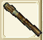
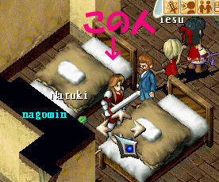
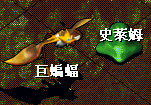
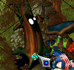

ランクアップI
■ 戦闘系
１、ウィルノアの村の病院(61.53)にいる傭兵のエリックにトーチ（火把）を貰う。

２、ウィルノアでて左上のほーにあるダンジョンの最上階にいる長老を倒す。

↑ちなみに道中の雑魚はこんな感じ。

↑Lv35のボスと雑魚のとりまきがいます。（召還有り）
３、ボスを倒した後、左にいる若いトレントに苗木？を貰う。
※剣？を貰った人は右にいる若いトレントに話す。
４、苗木？は置くと消滅するので、ファンブルグのマダムキティの店(196.78)で鑑定してもらう。
※30Gで鑑定でき、鑑定すると命のしずく花になる。
５、ウィルノアの村の村長の家(40.36)にいる村長のカタンに命のしずく花を渡すとランクアップに必要な条件が1つ満たされる。
■ 生産系